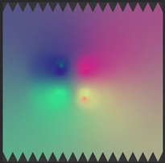
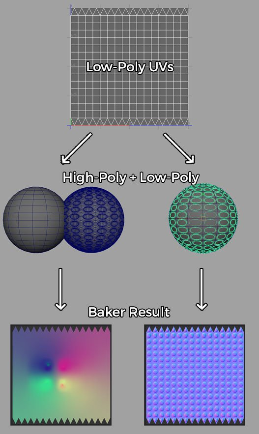

The output of the baker is a set of very strong colorful gradients.

Colorful gradients usually happens when there is a mismatch between the high-poly and low-poly mesh during the baking process. This mismatch can be explained by the following reason :
When it happens the baking process try to match geometry that doesn't exist, resulting in something empty. The baker fills this empty area with a color extracted from the neighbor pixels in the textures which creates the colorful gradient (unless Diffusion is disabled).
Given the few possible reasons which lead to non-overlap between the meshes, a few solutions have to be considered :
Below is an example with a high-poly and low-poly sphere. On the left the meshes don't overlap because the high-poly has been shifted away :
